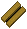
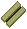

武器強化計算（木製武器）
ここでは、自分の所持している武器を強化することで武器の特性値がどのように変わるか、 さらに、強化のおおよその成功率が計算できます。
使用素材とスキル
大工／弓作成スキル ：
100.0未満
100.0
練成スキル ：
100未満またはガーゴイル以外
100.0〜109.9
110.0〜119.9
120.0
特殊素材選択 ：
-----素材[木材]------
Oak [スキル65〜]
Ash [スキル75〜]
Yew [スキル85〜]
Heartwood [スキル95〜]
Bloodwood [スキル95〜]
Frostwood [スキル95〜]
強化前後の特性値
もともと武器に付加されないプロパティ（装備条件、HP回復、重量）は省略します。ライフリーチは武器の基本速度に依存しない1〜25の強度で入力してください。
武器
ダメージ
命中
速度
幸運
ライフ
リーチ
[1〜25]
冷気
属性
耐久
強化前
%
%
0%
5%
10%
15%
20%
25%
30%
35%
0
10
20
30
40
50
60
70
80
90
100
強化後
%
%
%
強化成功率
成功率
失敗率
破壊率
実成功率
％
％
％
％
注意事項
未強化武器の特性値(武器ダメージ、命中、速度など)を選択または入力してください。
使用素材は、Oak, Ash, Yew, Heartwood, Bloodwood, Frostwoodの計6種類から選択します。
大工または弓工スキルが100の場合、プロパティごとの強化成功率が1％加算されます。
ガーゴイルで練成スキルが100.0以上の場合、プロパティごとの強化成功率が(1＋超過分/100)％加算されます（スキル120で＋3％）。
「強化成功率計算」ボタンを押すと、強化後の特性値および強化成功率が計算されます。
ライフリーチは、強化前にマジックプロパティとして付加された武器に加算されません
（ライフリーチ：N％ が付加されたものをBloodwoodで強化しても、ライフリーチは加算されません）
冷気属性攻撃は、他の属性が全て「物理属性」であるものとして強化後の数値を出しています。
新しく付加されるようになったプロパティの成功率は、暫定的に下のようにしております。
武器ダメージ・・・成功率＝[80−(強化前の武器ダメージ)/ 5]％、破壊率＝[10＋(強化前の武器ダメージ)/ 5]％
命中・・・成功率＝[80−（強化前の命中）/1.5] ％、破壊率＝[10＋（強化前の命中）/1.5]％
速度・・・成功率＝[80−（強化前の速度）/2] ％、破壊率＝[10＋（強化前の速度）/2]％
ライフリーチ・・・成功率＝[80−（強化前の強度）/2] ％、破壊率＝[10＋（強化前の強度）/2]％
重量・・・成功率＝80％固定、破壊率＝10％固定
Heartwoodのランダム付加・・・成功率＝80％固定、破壊率＝10％固定
参考 ： 素材による特性値の変化量
素材
必要
スキル
攻撃属性
武器
ダメージ
その他

oak
65.0
+5%
耐久値+50%, 幸運+40

ash
75.0
速度+10%, 装備条件-20%, 重量-25%
yew
85.0
+10%
命中+5%
heartwood
95.0
下記参照
bloodwood
95.0
HP回復2, ライフリーチ強度8
frostwood
95.0
冷気+40%
+12%
※
Bloodwoodに付加されるライフリーチはマジック品で付加されている強度が優先されます。
そのため、ライフリーチが付加されている装備品を強化してもライフリーチの強度は増加しません。
Heartwoodで付加されるプロパティと強度（以下のうち1つが付加されます）
幸運 40
耐久値＋50％
速度＋10％
装備条件−20％
重量−25％
命中＋5％
ライフリーチ 強度5